Mahsulotlar katalogi · 2026
Sog‘lig‘ingiz ishonchli qo‘llarda

Tabiiy giyohlardan tayyorlangan biologik faol qo‘shimchalar to‘plami — salomatligingizga kundalik g‘amxo‘rlik uchun.
- Tabiiy giyohlar asosida
- Biologik faol qo‘shimchalar
- Sog‘lom hayot sari
- Salomatlikka kundalik g‘amxo‘rlik
SINO TIB mutaxassisi
Abdushukur Ismoil Jurayev
Professional dietolog va ovqatlanish bo‘yicha mutaxassis
- 30+
- Yillik tajriba
- 66
- Yosh
- 10+
- Chet el davlatlarida

Dietologiya va ovqatlanish bo‘yicha 30 yildan ortiq maxsus tajribaga ega bo‘lgan tabib Abdushukur ko‘plab mamlakatlarda shaxsiylashtirilgan parhez aralashuvi va sog‘liqni saqlashning yaxlit yondashuvlari orqali minglab odamlarning hayotini o‘zgartirdi.
Mutaxassislik yo‘nalishlari
Klinik ovqatlanish
Turli xil kasalliklar va metabolik buzilishlar uchun maxsus dietik davolash.
Turmush tarzi tibbiyoti
Dietani o‘zgartirish va turmush tarziga oid choralar orqali profilaktika.
Vazn boshqaruvi
Shaxsiy ehtiyojlarga moslashtirilgan vazn kamaytirish va vazn orttirish dasturlari.
Sport ovqatlanishi
Sportchilar uchun maqsadli ovqatlanish strategiyalari orqali natijalarni yaxshilash.
Holistik sog‘liq
Optimal sog‘liq uchun an’anaviy donolikni zamonaviy ovqatlanish ilmi bilan uyg‘unlashtirish.
Jamoat salomatligi
Ovqatlanish bo‘yicha jamoat salomatligi tashabbuslari va ta’lim dasturlari.
SINO TIB haqida
Tabiat kuchi — har kungi g‘amxo‘rlik
SINO TIB — tabiiy giyohlardan tayyorlangan biologik faol qo‘shimchalar brendi. Mahsulotlarimiz salomatlikni kundalik qo‘llab-quvvatlash, organizmni tetiklashtirish va sog‘lom turmush tarzini shakllantirishga mo‘ljallangan.
Tabiiy giyohlar asosida
Tarkibi tabiiy o‘simlik xomashyosidan tayyorlangan.
Biologik faol qo‘shimchalar
Kundalik ratsionni to‘ldiruvchi foydali moddalar manbai.
Sog‘lom hayot sari
To‘g‘ri ovqatlanish va faol hayot tarzini qo‘llab-quvvatlaydi.
Kundalik g‘amxo‘rlik
Butun oila salomatligi uchun maxsus mahsulotlar.
Mahsulotlar
- Erkak Immun 99904
- Ayol Immun06
- Bolajon Immun 55508
- Universal Immun 70710
- Tabiiy Kuvvalda12
- Gemorroy dorisi14
- Oshqozon dorisi16
- Buqoq dorisi18
- Buyrak damlamasi20
- Giyohli damlama22
- Bo‘g‘im moyi24
- Sinomum26
- Tabon28
- Rosebud Tibet30
- Mahsulot nomi32
- Mahsulot nomi34
- Mahsulot nomi36
- Mahsulot nomi38
- Mahsulot nomi40
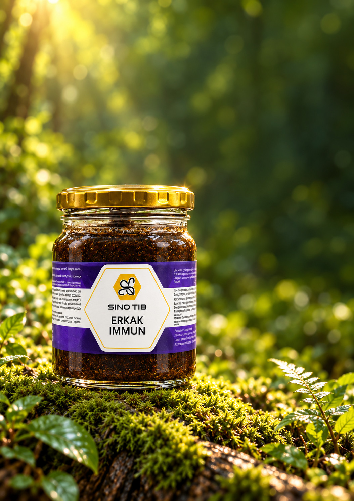
04SINO TIB · ±500 gr
Erkak Immun 999
Erkaklar immuniteti va quvvati uchun
- ImmunitetИммунитетImmunity
- Erkaklar salomatligiМужское здоровьеMen's health
- Kuch-quvvatСила и энергияStrength & energy
- ChidamlilikВыносливостьEndurance
- TetiklikБодростьVitality
- Tabiiy tarkibНатуральный составNatural ingredients
Erkaklar immuniteti va quvvati uchun
Erkaklar organizmi uchun tabiiy giyohlar asosidagi aralashma. Immunitetni mustahkamlash, kuch-quvvat va tetiklikni qo‘llab-quvvatlashga yordam beradi.
Для мужского иммунитета и силы
Натуральная смесь на основе трав для мужского организма. Помогает укрепить иммунитет, поддерживает силу и бодрость.
Immunity and strength for men
A natural herbal blend for men. Helps strengthen immunity and supports strength and vitality.
- HajmiОбъём · Volume
- ±500 gr
- TarkibiСостав · Ingredients
- 100% tabiiy
- NarxiЦена · Price
- — so‘m
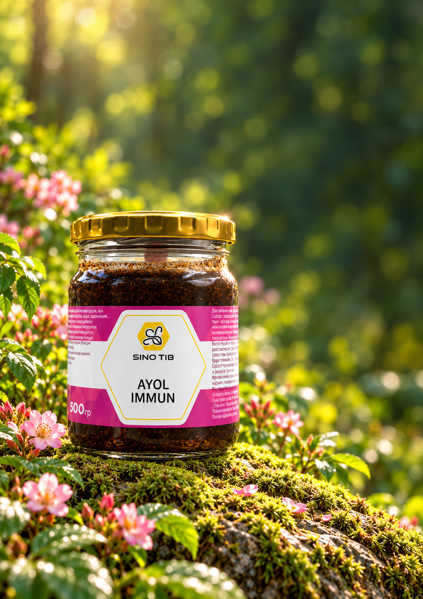
06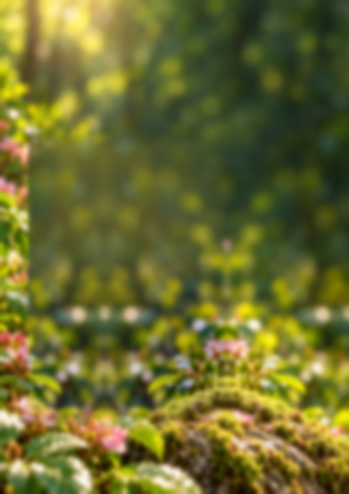
SINO TIB · 500 gr
Ayol Immun
Ayollar immuniteti va tetikligi uchun
- ImmunitetИммунитетImmunity
- Ayollar salomatligiЖенское здоровьеWomen's health
- TetiklikБодростьVitality
- EnergiyaЭнергияEnergy
- Umumiy salomatlikОбщее здоровьеOverall health
- Tabiiy tarkibНатуральный составNatural ingredients
Ayollar immuniteti va tetikligi uchun
Ayollar organizmi uchun maxsus tabiiy aralashma. Immunitetni mustahkamlash, tetiklik va umumiy salomatlikni qo‘llab-quvvatlashga yordam beradi.
Для женского иммунитета и бодрости
Специальная натуральная смесь для женского организма. Помогает укрепить иммунитет, поддерживает бодрость и общее здоровье.
Immunity and vitality for women
A special natural blend for women. Helps strengthen immunity and supports vitality and overall health.
- HajmiОбъём · Volume
- 500 gr
- TarkibiСостав · Ingredients
- 100% tabiiy
- NarxiЦена · Price
- — so‘m
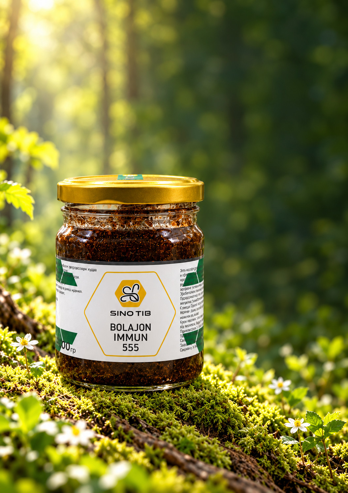
08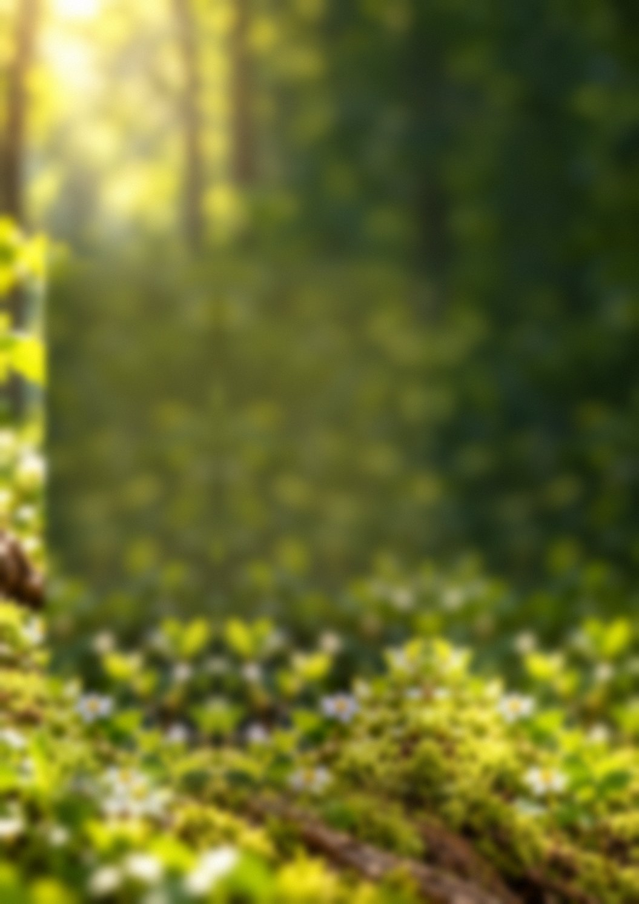
SINO TIB · 100% tabiiy
Bolajon Immun 555
Bolalar immuniteti uchun
- ImmunitetИммунитетImmunity
- Bolalar salomatligiЗдоровье детейChildren's health
- O‘sish va rivojlanishРост и развитиеGrowth
- TetiklikБодростьVitality
- Umumiy salomatlikОбщее здоровьеOverall health
- Tabiiy tarkibНатуральный составNatural ingredients
Bolalar immuniteti uchun
Bolalar organizmi uchun tabiiy giyohlar asosidagi aralashma. Immunitetni mustahkamlash, tetiklik va sog‘lom o‘sishni qo‘llab-quvvatlashga yordam beradi.
Для детского иммунитета
Натуральная смесь на основе трав для детского организма. Помогает укрепить иммунитет, поддерживает бодрость и здоровый рост.
Immunity for children
A natural herbal blend for children. Helps strengthen immunity and supports vitality and healthy growth.
- HajmiОбъём · Volume
- —
- TarkibiСостав · Ingredients
- 100% tabiiy
- NarxiЦена · Price
- — so‘m
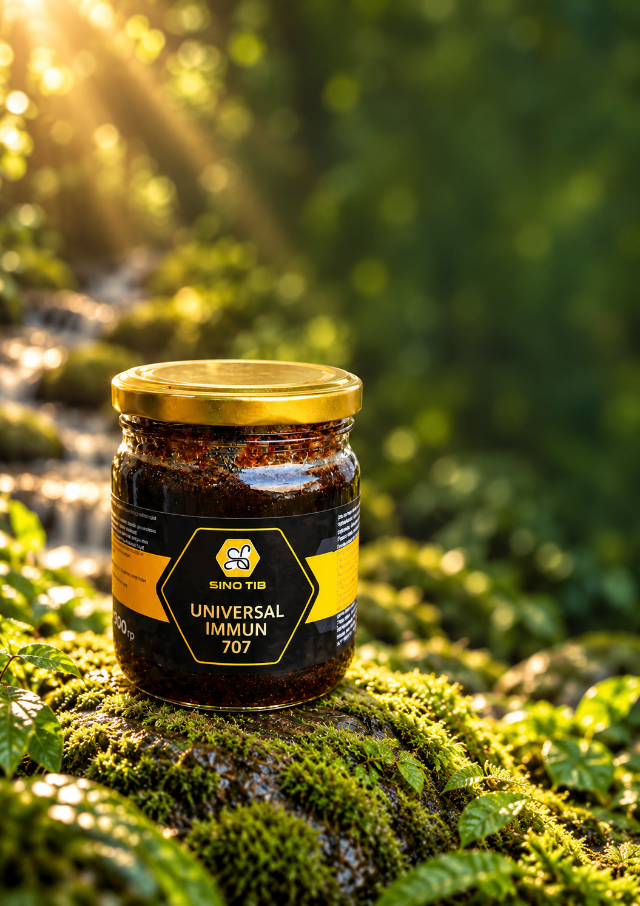
10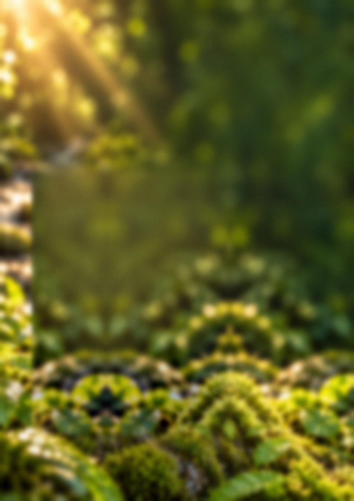
SINO TIB · 100% tabiiy
Universal Immun 707
Butun oila immuniteti uchun
- ImmunitetИммунитетImmunity
- Butun oila uchunДля всей семьиFor the whole family
- TetiklikБодростьVitality
- EnergiyaЭнергияEnergy
- Umumiy salomatlikОбщее здоровьеOverall health
- Tabiiy tarkibНатуральный составNatural ingredients
Butun oila immuniteti uchun
Butun oila uchun universal tabiiy aralashma. Organizmning himoya kuchlarini mustahkamlash, tetiklik va energiyani qo‘llab-quvvatlashga yordam beradi.
Иммунитет для всей семьи
Универсальная натуральная смесь для всей семьи. Помогает укрепить защитные силы организма, поддерживает бодрость и энергию.
Immunity for the whole family
A universal natural blend for the whole family. Helps strengthen the body's defences and supports vitality and energy.
- HajmiОбъём · Volume
- —
- TarkibiСостав · Ingredients
- 100% tabiiy
- NarxiЦена · Price
- — so‘m
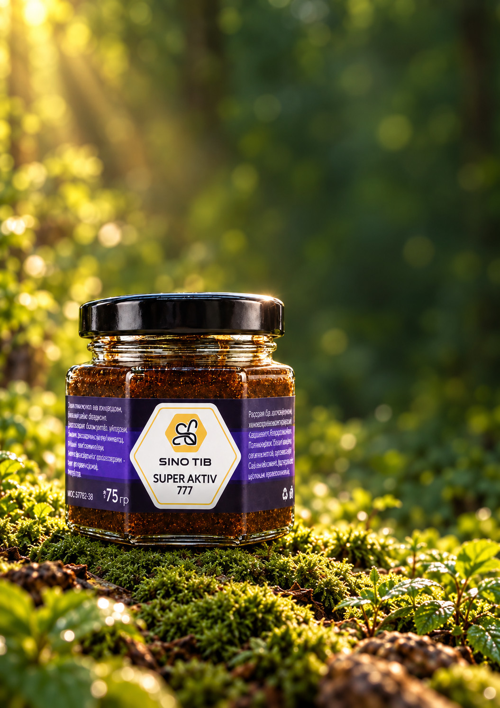
12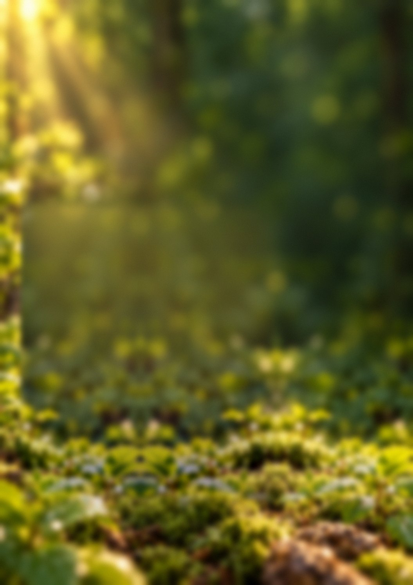
Super Aktiv 777 · ±75 gr
Tabiiy Kuvvalda
Erkaklar kuchini oshiruvchi vosita
- ImmunitetИммунитетImmunity
- Erkaklar salomatligiМужское здоровьеMen's health
- Kuch-quvvatСила и энергияStrength & energy
- Bo‘g‘im va mushaklarСуставы и мышцыJoints & muscles
- Soch parvarishiУход за волосамиHair care
- Tabiiy tarkibНатуральный составNatural ingredients
Erkaklar kuchini oshiruvchi vosita
Tabiiy KUVVALDA — erkaklar quvvati, jismoniy kuch va jinsiy faollikni qo‘llab-quvvatlashga mo‘ljallangan tabiiy mahsulot. Charchoqni kamaytirish, organizmni tetiklashtirish va umumiy salomatlikni mustahkamlashga yordam beradi.
Средство для повышения мужской силы
Натуральная «Кувалда» — натуральный продукт для поддержки мужской силы, физической выносливости и сексуальной активности. Помогает снизить усталость, взбодрить организм и укрепить общее здоровье.
Natural strength support for men
Natural KUVVALDA is a natural product designed to support male vitality, physical strength and sexual activity. It helps reduce fatigue, energise the body and strengthen overall health.
- HajmiОбъём · Volume
- ±75 gr
- TarkibiСостав · Ingredients
- 100% tabiiy
- NarxiЦена · Price
- — so‘m
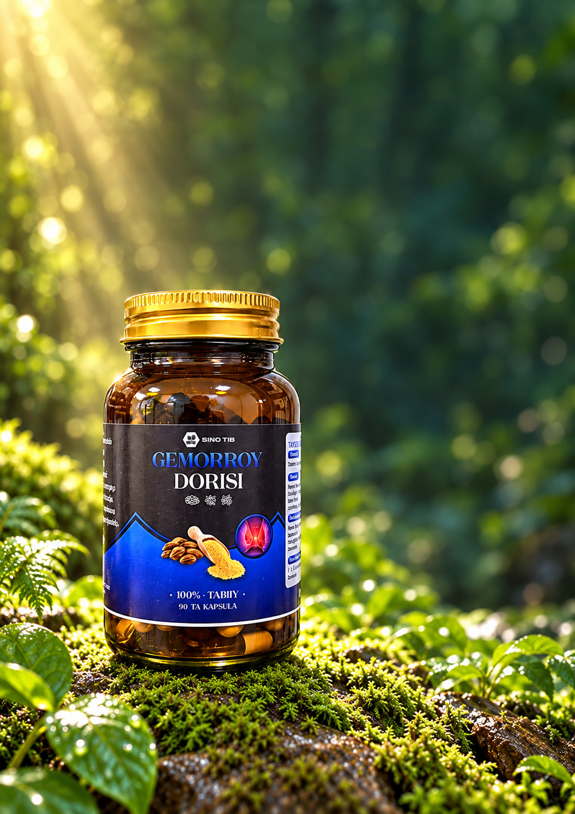
14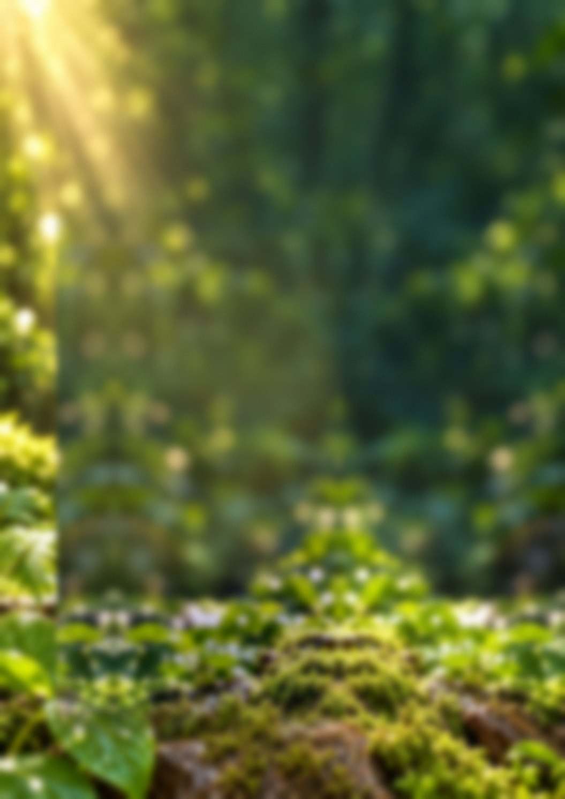
SINO TIB · 100% tabiiy
Gemorroy dorisi
Qon tomirlari va ichak salomatligi uchun
- Qon tomirlariСосудыBlood vessels
- Qon aylanishiКровообращениеCirculation
- Ichak faoliyatiРабота кишечникаBowel function
- Yengillik hissiКомфортComfort
- 90 ta kapsula90 капсул90 capsules
- Tabiiy tarkibНатуральный составNatural ingredients
Qon tomirlari va ichak salomatligi uchun
Tabiiy giyohlar asosida tayyorlangan kapsulalar. Qon tomirlari va ichak faoliyatini qo‘llab-quvvatlashga, noqulaylik hissini kamaytirishga yordam beradi.
Для здоровья сосудов и кишечника
Капсулы на основе натуральных трав. Помогают поддерживать здоровье сосудов и работу кишечника, уменьшают чувство дискомфорта.
For healthy blood vessels and bowels
Capsules made from natural herbs. Help support healthy blood vessels and bowel function and ease discomfort.
- HajmiОбъём · Volume
- 90 ta kapsula
- TarkibiСостав · Ingredients
- 100% tabiiy
- NarxiЦена · Price
- — so‘m
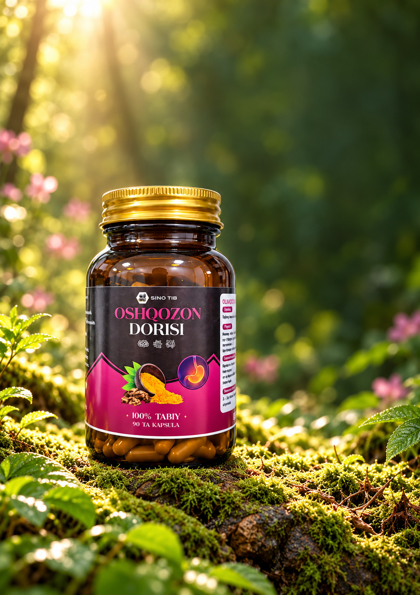
16SINO TIB · 100% tabiiy
Oshqozon dorisi
Oshqozon va hazm tizimi uchun
- Hazm tizimiПищеварениеDigestion
- Oshqozon salomatligiЗдоровье желудкаStomach health
- YengillikЛёгкостьLightness
- Modda almashinuviОбмен веществMetabolism
- 90 ta kapsula90 капсул90 capsules
- Tabiiy tarkibНатуральный составNatural ingredients
Oshqozon va hazm tizimi uchun
Hazm tizimi uchun tabiiy giyohlar asosidagi kapsulalar. Hazm jarayonini yengillashtirish va oshqozon salomatligini qo‘llab-quvvatlashga yordam beradi.
Для желудка и пищеварения
Капсулы на основе натуральных трав для пищеварительной системы. Облегчают пищеварение и помогают поддерживать здоровье желудка.
For stomach and digestion
Herbal capsules for the digestive system. Help ease digestion and support stomach health.
- HajmiОбъём · Volume
- 90 ta kapsula
- TarkibiСостав · Ingredients
- 100% tabiiy
- NarxiЦена · Price
- — so‘m
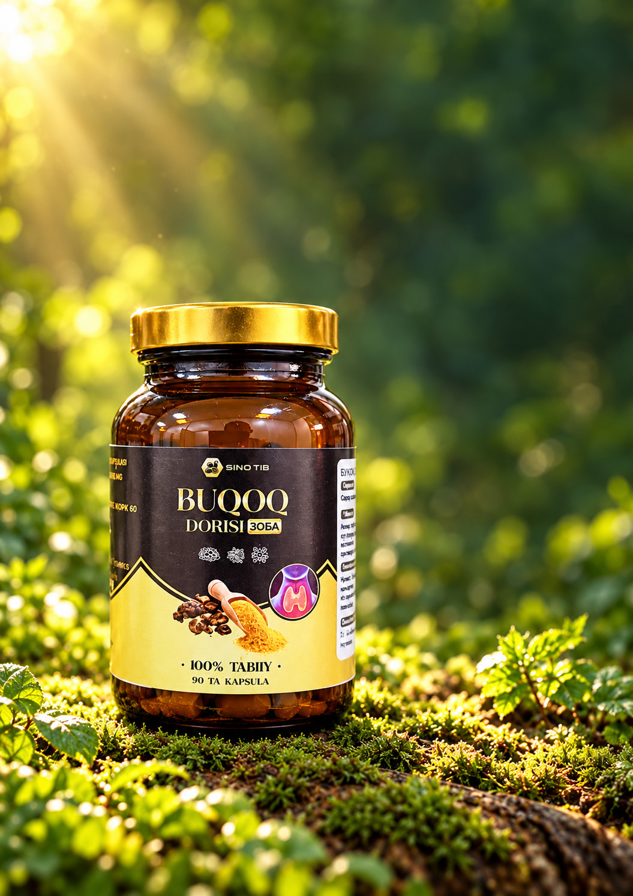
18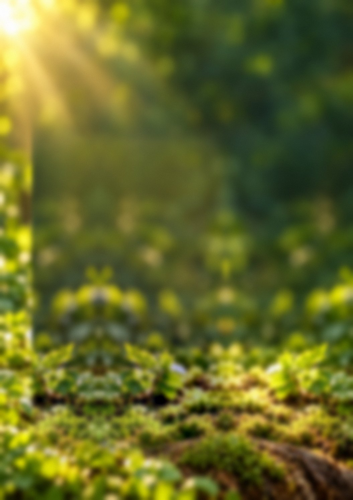
SINO TIB · 100% tabiiy
Buqoq dorisi
Qalqonsimon bez salomatligi uchun
- Qalqonsimon bezЩитовидная железаThyroid
- Gormonal muvozanatГормональный балансHormonal balance
- Modda almashinuviОбмен веществMetabolism
- EnergiyaЭнергияEnergy
- 90 ta kapsula90 капсул90 capsules
- Tabiiy tarkibНатуральный составNatural ingredients
Qalqonsimon bez salomatligi uchun
Qalqonsimon bez faoliyatini qo‘llab-quvvatlash uchun tabiiy giyohlar asosidagi kapsulalar. Organizmda modda almashinuvi muvozanatini saqlashga yordam beradi.
Для здоровья щитовидной железы
Капсулы на основе натуральных трав для поддержки работы щитовидной железы. Помогают сохранять баланс обмена веществ в организме.
For thyroid health
Herbal capsules to support thyroid function. Help maintain a healthy metabolic balance in the body.
- HajmiОбъём · Volume
- 90 ta kapsula
- TarkibiСостав · Ingredients
- 100% tabiiy
- NarxiЦена · Price
- — so‘m
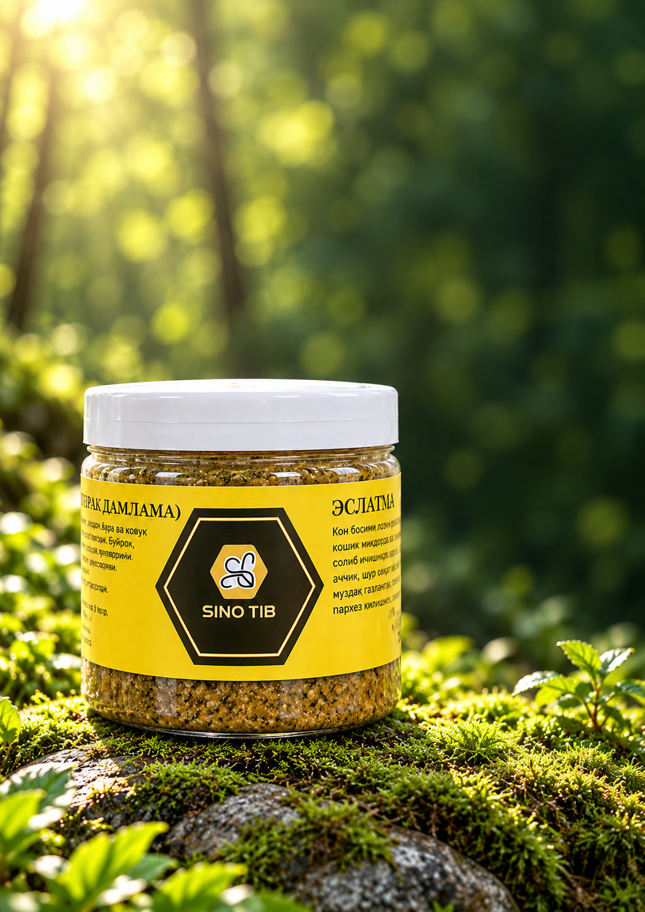
20SINO TIB · Giyohli damlama
Buyrak damlamasi
Buyrak va siydik yo‘llari uchun
- BuyraklarПочкиKidneys
- Siydik yo‘llariМочевыводящие путиUrinary tract
- Giyohli choyТравяной чайHerbal tea
- Kundalik g‘amxo‘rlikЕжедневная заботаDaily care
- Tabiiy tarkibНатуральный составNatural ingredients
Buyrak va siydik yo‘llari uchun
Buyrak va siydik yo‘llari faoliyatini qo‘llab-quvvatlash uchun tabiiy giyohlardan tayyorlangan damlama (choy).
Для почек и мочевыводящих путей
Травяной сбор (чай) из натуральных растений для поддержки работы почек и мочевыводящих путей.
For kidneys and urinary tract
A natural herbal infusion (tea) to support kidney and urinary tract function.
- HajmiОбъём · Volume
- —
- TarkibiСостав · Ingredients
- 100% tabiiy
- NarxiЦена · Price
- — so‘m
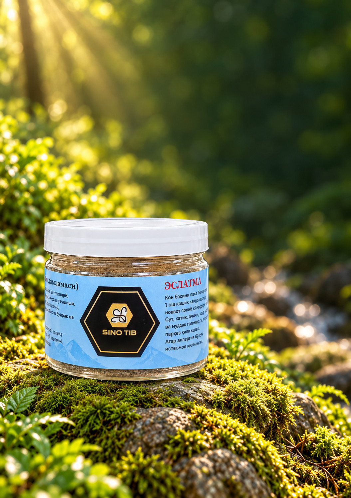
22SINO TIB · Giyohli damlama
Giyohli damlama
Tabiiy giyohli damlama
- Giyohli choyТравяной чайHerbal tea
- Tabiiy tarkibНатуральный составNatural ingredients
- Kundalik g‘amxo‘rlikЕжедневная заботаDaily care
- Sog‘lom hayotЗдоровый образ жизниHealthy living
Tabiiy giyohli damlama
Tabiiy giyohlardan tayyorlangan damlama (choy) — salomatlikka kundalik g‘amxo‘rlik uchun.
Натуральный травяной сбор
Травяной сбор (чай) из натуральных растений — для ежедневной заботы о здоровье.
Natural herbal infusion
A natural herbal infusion (tea) for everyday care of your health.
- HajmiОбъём · Volume
- —
- TarkibiСостав · Ingredients
- 100% tabiiy
- NarxiЦена · Price
- — so‘m
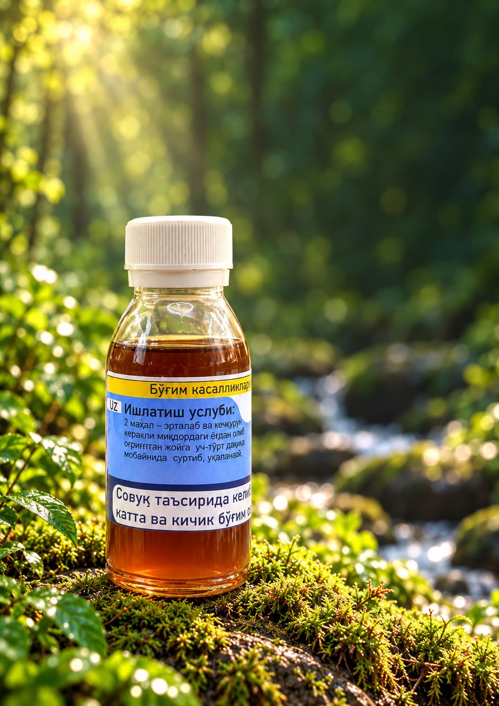
24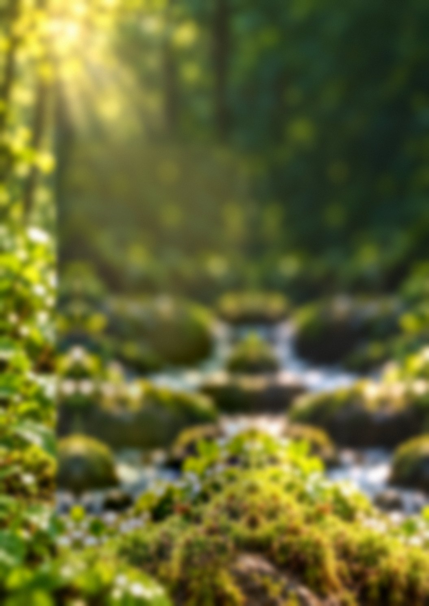
SINO TIB · Tashqi qo‘llash uchun
Bo‘g‘im moyi
Bo‘g‘im va mushaklar uchun
- Bo‘g‘imlarСуставыJoints
- MushaklarМышцыMuscles
- Surtib qo‘llanadiНаружное применениеExternal use
- Kuniga 2 mahal2 раза в деньTwice a day
- Tabiiy tarkibНатуральный составNatural ingredients
Bo‘g‘im va mushaklar uchun
Sovuq ta’sirida yuzaga kelgan katta va kichik bo‘g‘imlardagi noqulayliklarda qo‘llaniladi. Kuniga 2 mahal — ertalab va kechqurun — og‘rigan joyga 3–4 daqiqa davomida surtib, uqalanadi.
Для суставов и мышц
Применяется при дискомфорте в крупных и мелких суставах, вызванном переохлаждением. 2 раза в день — утром и вечером — втирать в болезненное место в течение 3–4 минут.
For joints and muscles
Used for discomfort in large and small joints caused by cold. Twice a day, morning and evening, rub into the affected area for 3–4 minutes.
- HajmiОбъём · Volume
- —
- TarkibiСостав · Ingredients
- 100% tabiiy
- NarxiЦена · Price
- — so‘m
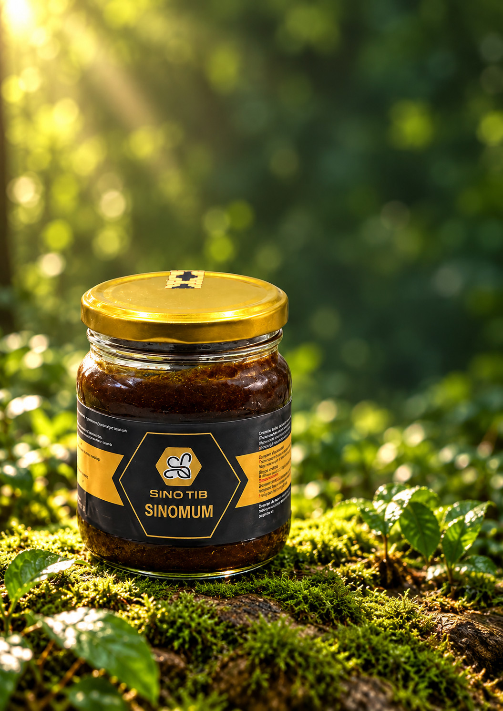
26SINO TIB · 100% tabiiy
Sinomum
Tabiiy giyohlar asosida
- Tabiiy tarkibНатуральный составNatural ingredients
- Kundalik g‘amxo‘rlikЕжедневная заботаDaily care
- Sog‘lom hayotЗдоровый образ жизниHealthy living
- Yuqori sifatВысокое качествоHigh quality
Tabiiy giyohlar asosida
SINO TIB tabiiy giyohlar asosidagi mahsuloti — salomatligingizga kundalik g‘amxo‘rlik uchun.
На основе натуральных трав
Продукт SINO TIB на основе натуральных трав — для ежедневной заботы о вашем здоровье.
Made from natural herbs
A SINO TIB product made from natural herbs — for everyday care of your health.
- HajmiОбъём · Volume
- —
- TarkibiСостав · Ingredients
- 100% tabiiy
- NarxiЦена · Price
- — so‘m
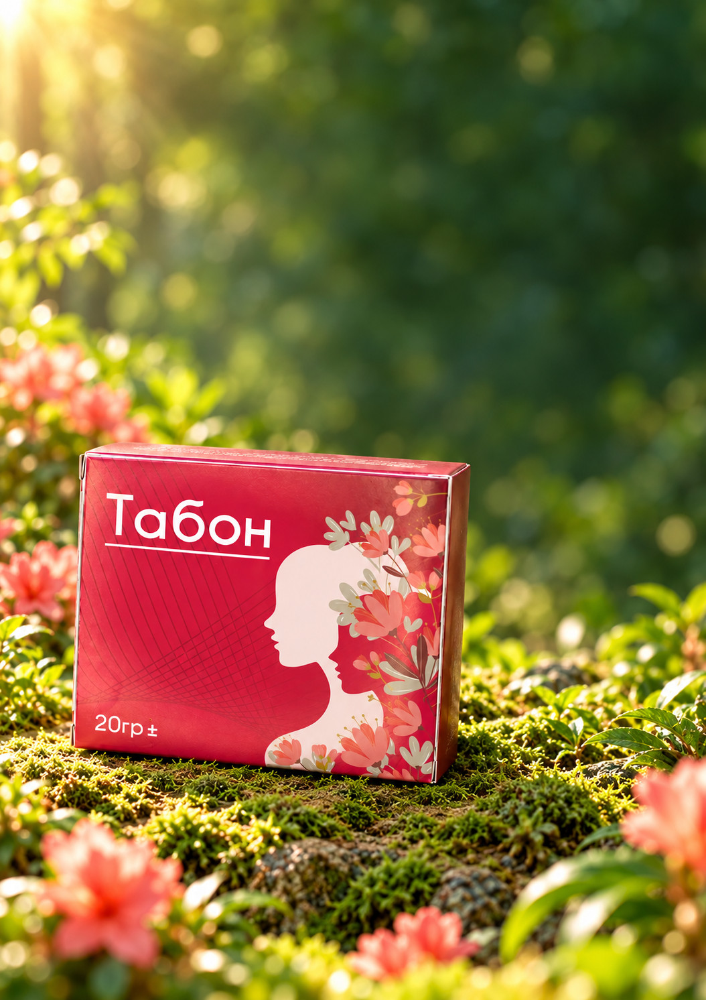
28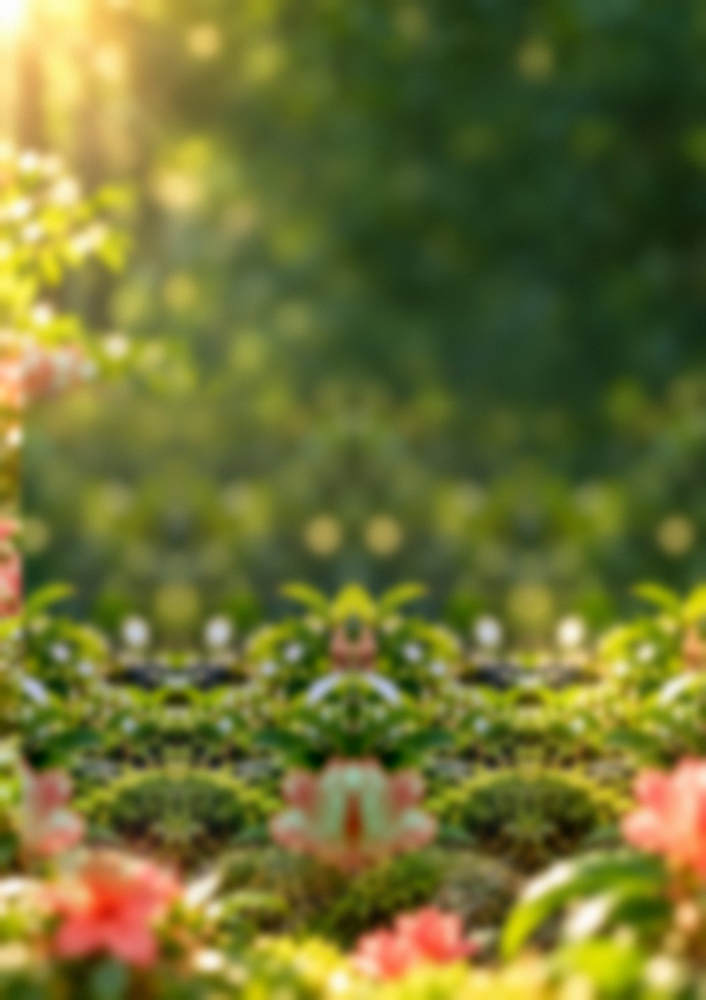
SINO TIB · ±20 gr
Tabon
Ayollar salomatligi uchun
- Ayollar salomatligiЖенское здоровьеWomen's health
- Tabiiy tarkibНатуральный составNatural ingredients
- Kundalik g‘amxo‘rlikЕжедневная заботаDaily care
- Yuqori sifatВысокое качествоHigh quality
Ayollar salomatligi uchun
Ayollar uchun tabiiy mahsulot — salomatlikka kundalik g‘amxo‘rlik uchun.
Для женского здоровья
Натуральный продукт для женщин — для ежедневной заботы о здоровье.
For women's health
A natural product for women — for everyday care of your health.
- HajmiОбъём · Volume
- ±20 gr
- TarkibiСостав · Ingredients
- 100% tabiiy
- NarxiЦена · Price
- — so‘m
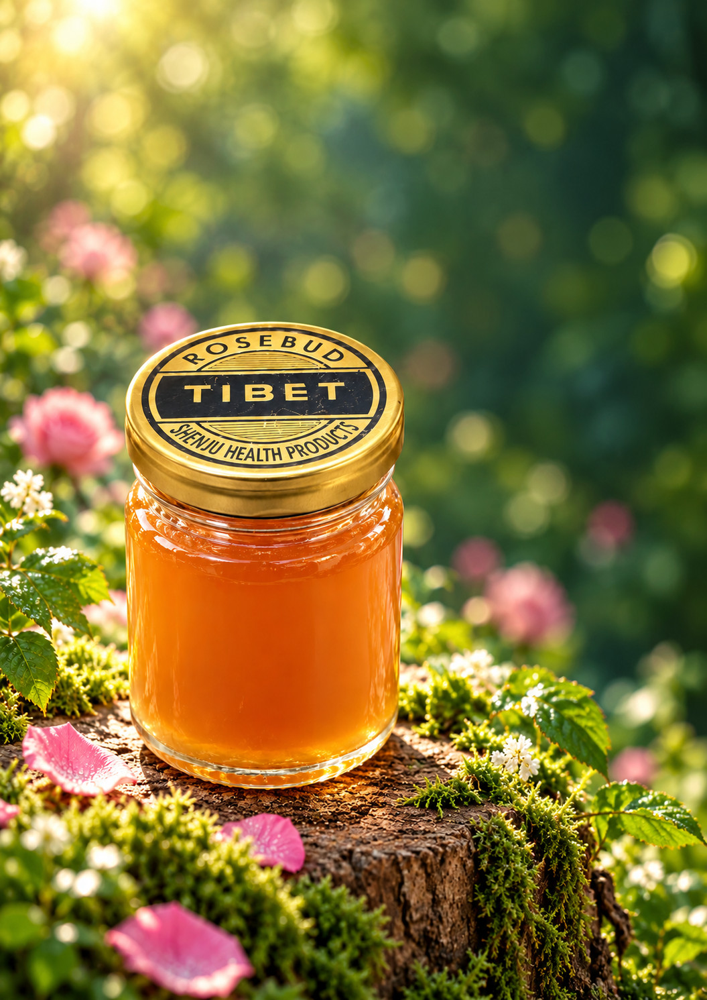
30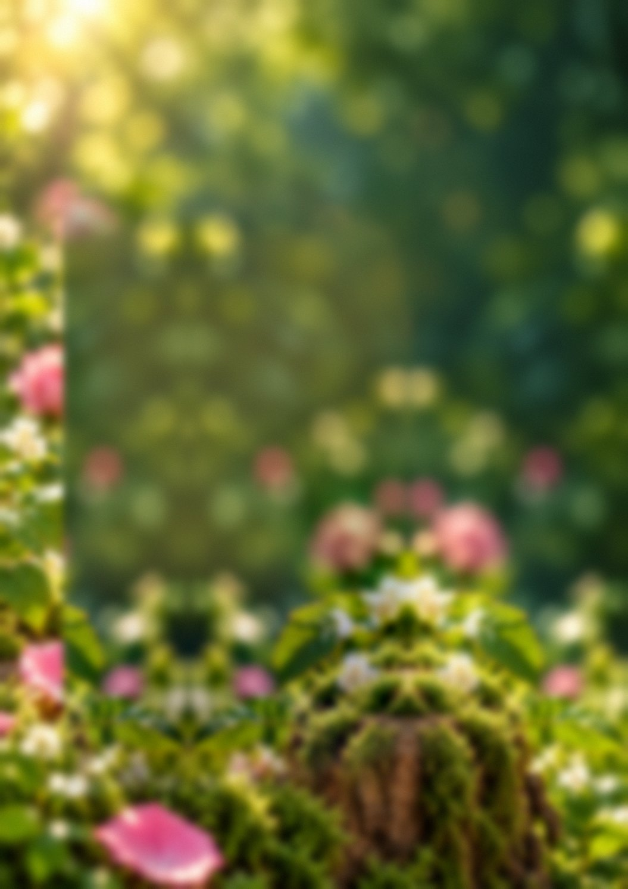
Shenju Health Products
Rosebud Tibet
Tabiiy mahsulot
- Tabiiy tarkibНатуральный составNatural ingredients
- Kundalik g‘amxo‘rlikЕжедневная заботаDaily care
- Sog‘lom hayotЗдоровый образ жизниHealthy living
- Yuqori sifatВысокое качествоHigh quality
Tabiiy mahsulot
Tabiiy mahsulot — salomatligingizga kundalik g‘amxo‘rlik uchun.
Натуральный продукт
Натуральный продукт — для ежедневной заботы о вашем здоровье.
Natural product
A natural product for everyday care of your health.
- HajmiОбъём · Volume
- —
- TarkibiСостав · Ingredients
- 100% tabiiy
- NarxiЦена · Price
- — so‘m
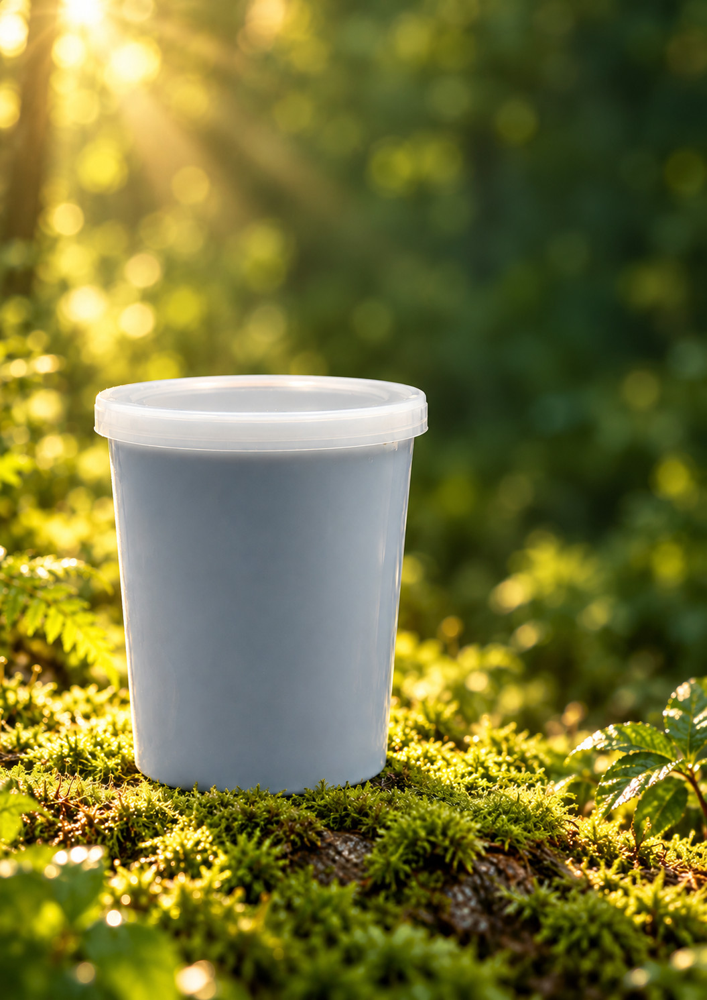
32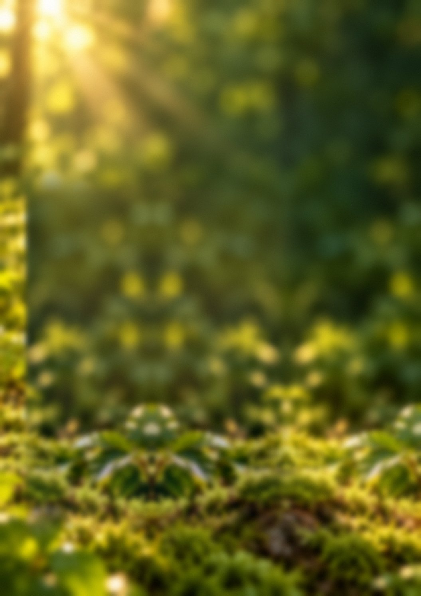
SINO TIB
Mahsulot nomi
Qisqa tavsif
- Tabiiy tarkibНатуральный составNatural ingredients
- Kundalik g‘amxo‘rlikЕжедневная заботаDaily care
- Sog‘lom hayotЗдоровый образ жизниHealthy living
- Yuqori sifatВысокое качествоHigh quality
Qisqa tavsif
Mahsulot haqida ma’lumot: tarkibi, foydasi va qo‘llash usuli.
Краткое описание
Информация о продукте: состав, польза и способ применения.
Short description
Product information: ingredients, benefits and directions for use.
- HajmiОбъём · Volume
- —
- TarkibiСостав · Ingredients
- 100% tabiiy
- NarxiЦена · Price
- — so‘m
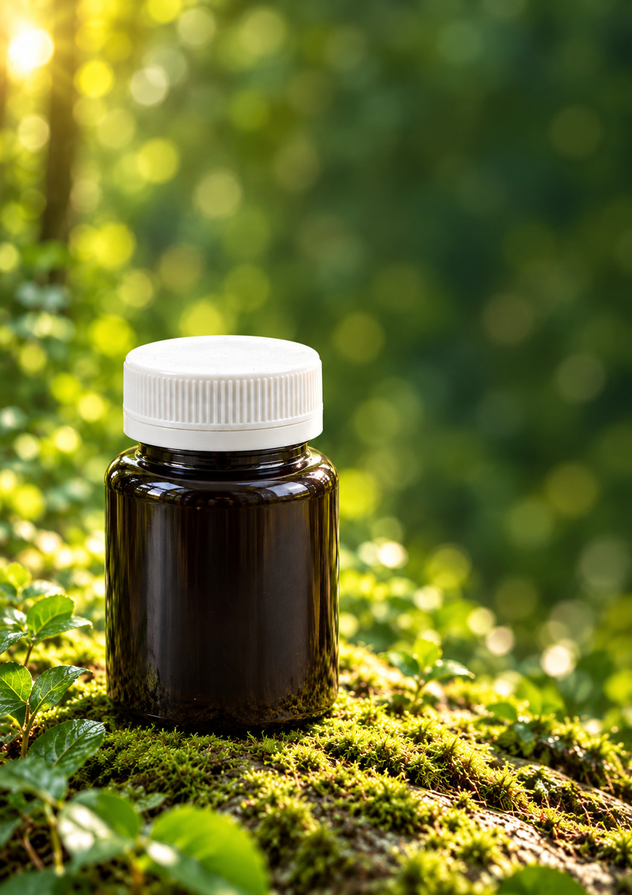
34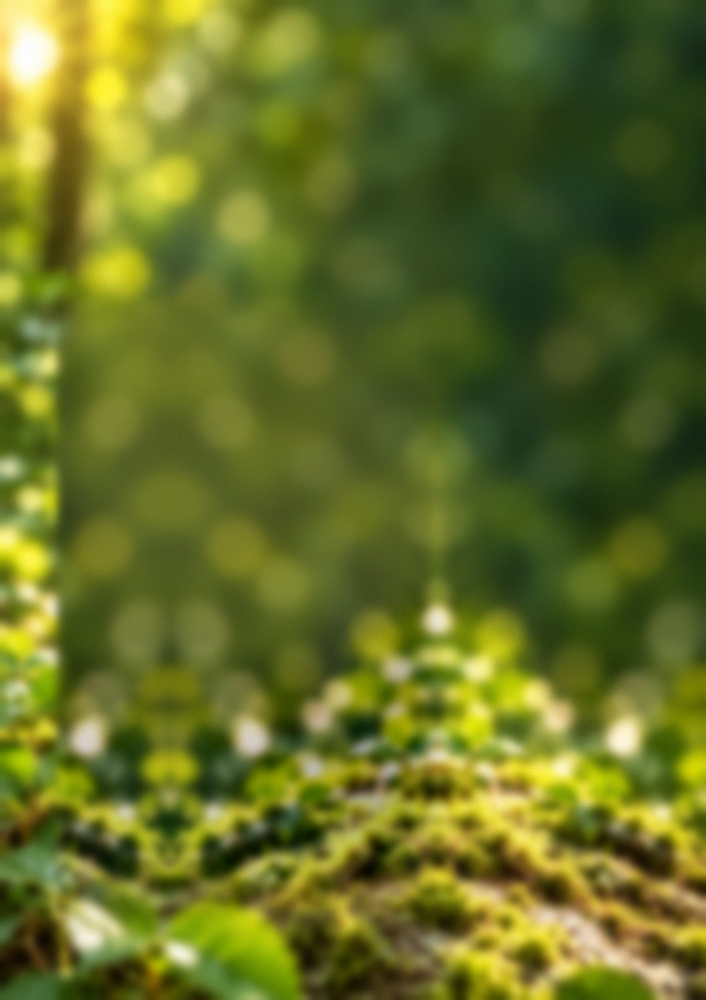
SINO TIB
Mahsulot nomi
Qisqa tavsif
- Tabiiy tarkibНатуральный составNatural ingredients
- Kundalik g‘amxo‘rlikЕжедневная заботаDaily care
- Sog‘lom hayotЗдоровый образ жизниHealthy living
- Yuqori sifatВысокое качествоHigh quality
Qisqa tavsif
Mahsulot haqida ma’lumot: tarkibi, foydasi va qo‘llash usuli.
Краткое описание
Информация о продукте: состав, польза и способ применения.
Short description
Product information: ingredients, benefits and directions for use.
- HajmiОбъём · Volume
- —
- TarkibiСостав · Ingredients
- 100% tabiiy
- NarxiЦена · Price
- — so‘m
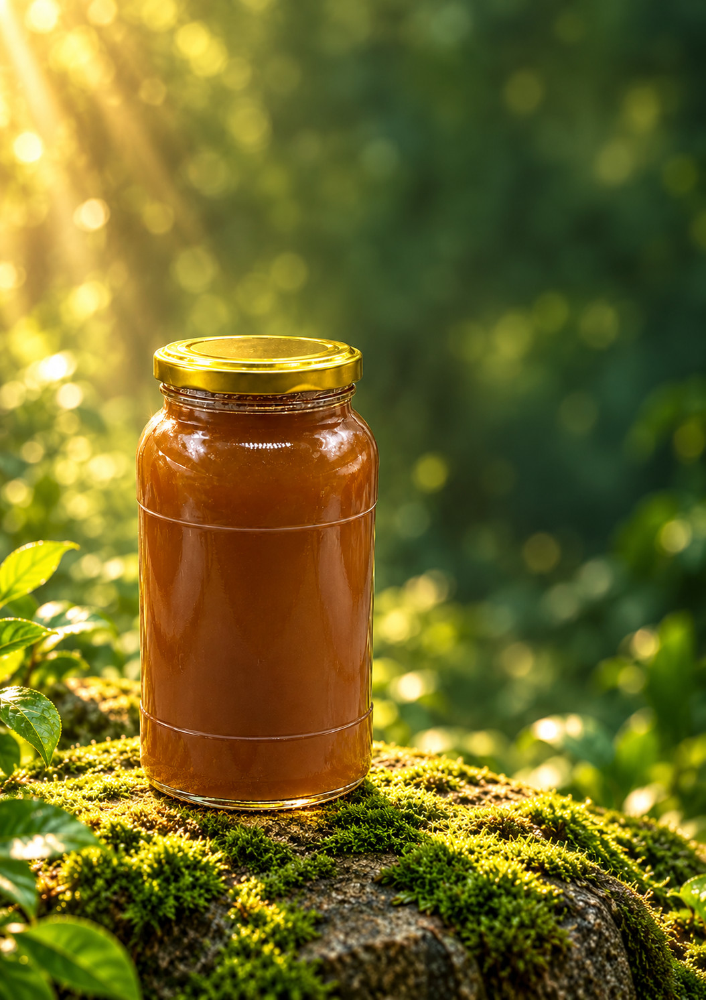
36SINO TIB
Mahsulot nomi
Qisqa tavsif
- Tabiiy tarkibНатуральный составNatural ingredients
- Kundalik g‘amxo‘rlikЕжедневная заботаDaily care
- Sog‘lom hayotЗдоровый образ жизниHealthy living
- Yuqori sifatВысокое качествоHigh quality
Qisqa tavsif
Mahsulot haqida ma’lumot: tarkibi, foydasi va qo‘llash usuli.
Краткое описание
Информация о продукте: состав, польза и способ применения.
Short description
Product information: ingredients, benefits and directions for use.
- HajmiОбъём · Volume
- —
- TarkibiСостав · Ingredients
- 100% tabiiy
- NarxiЦена · Price
- — so‘m
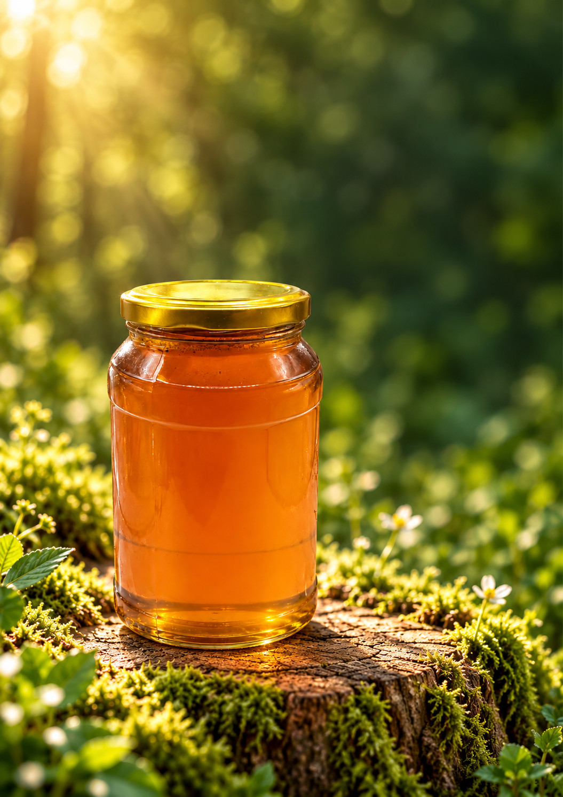
38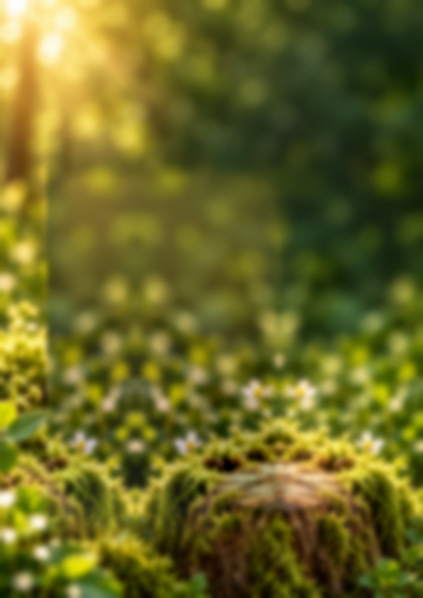
SINO TIB
Mahsulot nomi
Qisqa tavsif
- Tabiiy tarkibНатуральный составNatural ingredients
- Kundalik g‘amxo‘rlikЕжедневная заботаDaily care
- Sog‘lom hayotЗдоровый образ жизниHealthy living
- Yuqori sifatВысокое качествоHigh quality
Qisqa tavsif
Mahsulot haqida ma’lumot: tarkibi, foydasi va qo‘llash usuli.
Краткое описание
Информация о продукте: состав, польза и способ применения.
Short description
Product information: ingredients, benefits and directions for use.
- HajmiОбъём · Volume
- —
- TarkibiСостав · Ingredients
- 100% tabiiy
- NarxiЦена · Price
- — so‘m
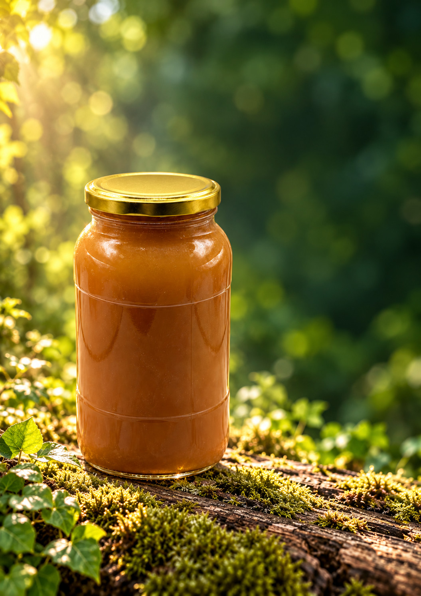
40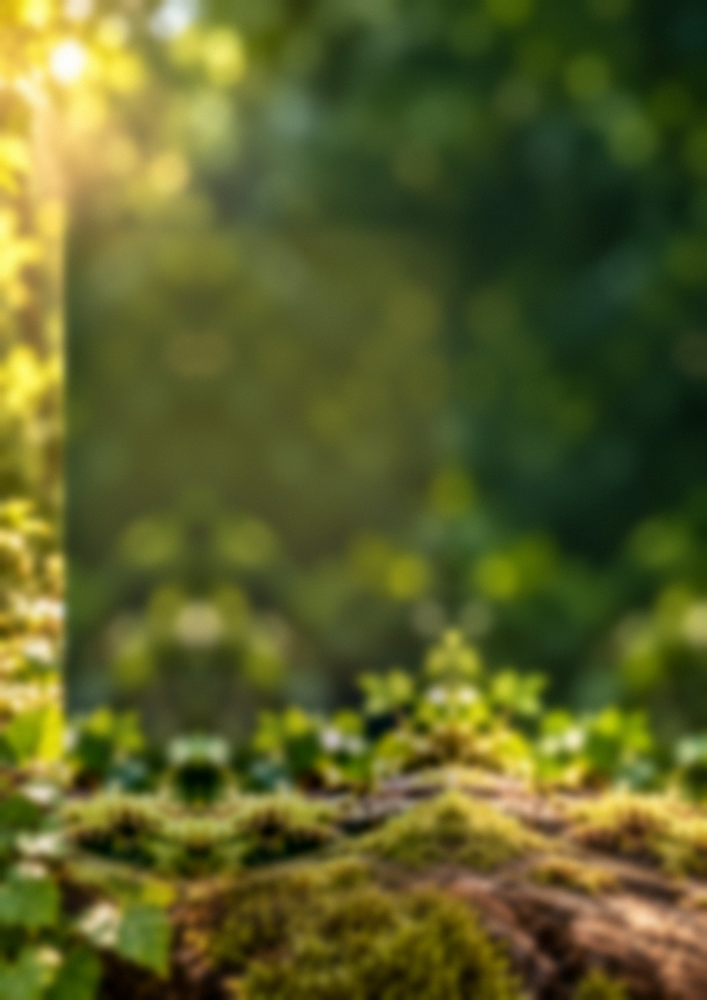
SINO TIB
Mahsulot nomi
Qisqa tavsif
- Tabiiy tarkibНатуральный составNatural ingredients
- Kundalik g‘amxo‘rlikЕжедневная заботаDaily care
- Sog‘lom hayotЗдоровый образ жизниHealthy living
- Yuqori sifatВысокое качествоHigh quality
Qisqa tavsif
Mahsulot haqida ma’lumot: tarkibi, foydasi va qo‘llash usuli.
Краткое описание
Информация о продукте: состав, польза и способ применения.
Short description
Product information: ingredients, benefits and directions for use.
- HajmiОбъём · Volume
- —
- TarkibiСостав · Ingredients
- 100% tabiiy
- NarxiЦена · Price
- — so‘m
Buyurtma berish
To‘rt oddiy qadam
Maslahat oling
Mutaxassis bilan bog‘lanib, o‘zingizga mos mahsulotni aniqlang.
Mahsulotni tanlang
Katalogdan kerakli mahsulot nomini belgilab oling.
Buyurtma bering
Telefon yoki Telegram orqali buyurtma qoldiring.
Qabul qiling
Yetkazib berish shartlari operator bilan kelishiladi.
Muhim tavsiyalar
- Qo‘llashdan oldin mutaxassis bilan maslahatlashing.
- Tavsiya etilgan miqdordan oshirmang.
- Homiladorlik va emizish davrida ehtiyotkorlik bilan qo‘llang.
- Tarkibiy qismlarga individual sezuvchanlik bo‘lsa, qo‘llamang.
- Quruq, salqin va quyosh nuri tushmaydigan joyda saqlang.
- Bolalar ololmaydigan joyda saqlang.
Sog‘lig‘ingiz ishonchli qo‘llarda
Tabiiy giyohlardan tayyorlangan biologik faol qo‘shimchalar — butun oila salomatligi uchun.
Narxlar ro‘yxati
Mahsulotlar va narxlar
| № | Mahsulot | Hajmi | Narxi, so‘m |
|---|---|---|---|
| 1 | Erkak Immun 999Erkaklar immuniteti va quvvati uchun | ±500 gr | — |
| 2 | Ayol ImmunAyollar immuniteti va tetikligi uchun | 500 gr | — |
| 3 | Bolajon Immun 555Bolalar immuniteti uchun | — | — |
| 4 | Universal Immun 707Butun oila immuniteti uchun | — | — |
| 5 | Tabiiy KuvvaldaErkaklar kuchini oshiruvchi vosita | ±75 gr | — |
| 6 | Gemorroy dorisiQon tomirlari va ichak salomatligi uchun | 90 ta kapsula | — |
| 7 | Oshqozon dorisiOshqozon va hazm tizimi uchun | 90 ta kapsula | — |
| 8 | Buqoq dorisiQalqonsimon bez salomatligi uchun | 90 ta kapsula | — |
| 9 | Buyrak damlamasiBuyrak va siydik yo‘llari uchun | — | — |
| 10 | Giyohli damlamaTabiiy giyohli damlama | — | — |
| 11 | Bo‘g‘im moyiBo‘g‘im va mushaklar uchun | — | — |
| 12 | SinomumTabiiy giyohlar asosida | — | — |
| 13 | TabonAyollar salomatligi uchun | ±20 gr | — |
| 14 | Rosebud TibetTabiiy mahsulot | — | — |
| 15 | Mahsulot nomiQisqa tavsif | — | — |
| 16 | Mahsulot nomiQisqa tavsif | — | — |
| 17 | Mahsulot nomiQisqa tavsif | — | — |
| 18 | Mahsulot nomiQisqa tavsif | — | — |
| 19 | Mahsulot nomiQisqa tavsif | — | — |
SINO TIB
Sog‘lig‘ingiz ishonchli qo‘llarda
- Telefon
+998 __ ___ __ __
- Telegram
@username
- Instagram
@username
- Veb-sayt
abdushukur.uz

Biologik faol qo‘shimcha. Dori vositasi hisoblanmaydi. Qo‘llashdan oldin mutaxassis bilan maslahatlashing.